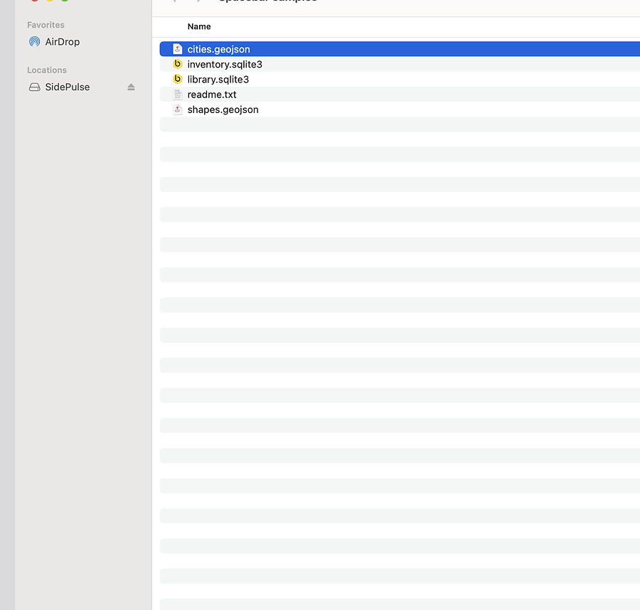

Quick Look previews from plugins. Press space on a file in Finder; a folder of HTML and JS renders it.

plugin.json, index.html, your JS. No build step.geojson (map, zero dependencies) and sqlite (tables, rows, schema).scripts/new-plugin.sh gives you a working plugin to edit.brew tap gregsadetsky/tap && brew install --cask spacebar
Not signed with an Apple developer id yet: macOS refuses it once. System Settings → Privacy & Security → Open Anyway, or xattr -dr com.apple.quarantine ~/Applications/Spacebar.app. Then, if previews don't show: System Settings → General → Login Items & Extensions → Quick Look → Spacebar.
github.com/gregsadetsky/spacebar, MIT. Plugin contract in PLUGINS.md.